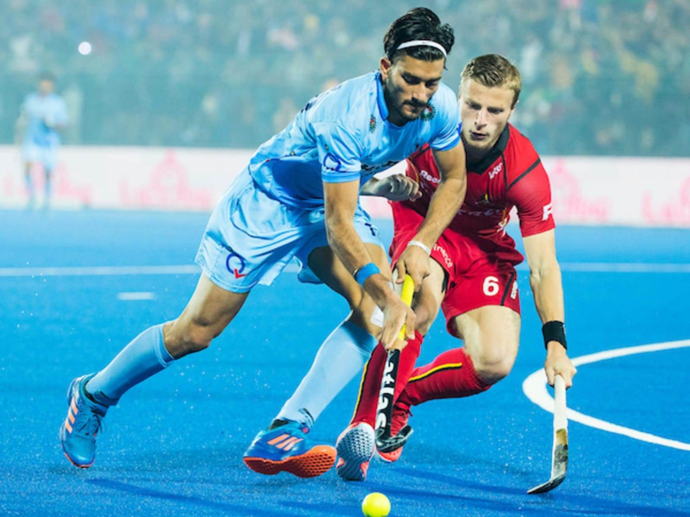

History of Hockey
Hockey has ancient origins, with similar stick-and-ball games played in Egypt, Greece, and Persia. Modern field hockey developed in 18th-century England and spread globally through British colonization.
It became a popular sport in countries like India, Pakistan, the Netherlands, and Australia. The International Hockey Federation (FIH) was established in 1924 to organize and govern the sport worldwide.
Basic Rules of Hockey
- Each team has 11 players, including a goalkeeper
- Played on a grass or synthetic field
- Use a curved hockey stick to hit a small, hard ball
- Match duration: 4 quarters of 15 minutes
- Goals are scored by hitting the ball into the opponent's goal from inside the shooting circle
Famous Hockey Tournaments
- FIH Hockey World Cup
- Olympic Games (Men's and Women's)
- Hockey Pro League
- Champions Trophy
- Asia Cup & EuroHockey Championship
Legendary Hockey Players
- Dhyan Chand (India)
- Ric Charlesworth (Australia)
- Sohail Abbas (Pakistan)
- Jamie Dwyer (Australia)
- Luciana Aymar (Argentina - Women)
Health Benefits of Playing Hockey
- Improves cardiovascular fitness and endurance
- Develops coordination, agility, and balance
- Boosts reflexes and strategic thinking
- Promotes teamwork and discipline
- Enhances upper and lower body strength
Global Popularity of Hockey
Field hockey is especially popular in India, Pakistan, the Netherlands, Germany, Argentina, and Australia. With international tournaments and grassroots programs, it continues to grow and unite diverse communities around the world.